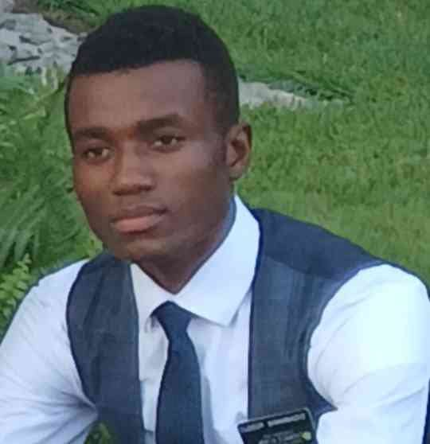

Divin Bakanadio | WDD 130

Hello! My name is Armel Divin Gervais Bakanadio and I am learning Web and Computer Programming. I am from Brazzaville, in the Republic of Congo, and I am excited to be studying with BYU-Pathway. I have always been curious about how websites and applications work, and now I am learning how to build them myself, step by step. For me, programming is not just about code, it is about creating something useful that can help people and change lives. My goal is to become a skilled web developer and to use my skills to build beautiful and meaningful projects. I love learning new things, working on creative ideas, and challenging myself to grow every day. When I am not coding, I enjoy spending time with the people I love, listening to music, and dreaming about the future I want to build. I believe that with faith, hard work, and patience, I can turn my passion for technology into a great career.